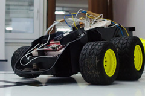

Çizgi izleyen robotumuz :)
January 27, 2011
Bizim de çizgi izleyen bir robotumuz oldu. Çok yenilikçi bir çalışma olduğu söylenemez ama uğraşması oldukça zevkli. :) Gerçek zamanlı sistemler dersinin projesi olarak 3 kişilik bir ekip ile 4 günde geliştirdiğimiz bu robotun teknik detaylarını ve videosunu yazının devamında inceleyebilirsiniz.
Geliştirilen robot, beyaz zemin üzerindeki siyah çizgiyi IR yansımaya dayalı algılayıcıları ile algılamakta ve çizginin oluşturduğu yol üzerinde ilerlemektedir. Yazının devamında robotun kullandığı karar yöntemleri, robotun tasarımı, karşılaşılan problemler ve çözümlerine yer verilmiştir.
Kullanılan Malzemeler:
- Texas Instruments MSP430 Mikrodenetleyici
- CNY70 Karşıtlık sensörleri
- L298 Motor sürücü tümdevresi
- LM324 İşlemsel kuvvetlendirici tümdevresi
- 1KΩ potansiyometre, 47KΩ ve 330Ω dirençler
- 12V DC Motorlar
- Robot gövdesi, pil yuvası, anahtar v.s.
Çizginin Algılanması
Siyah çizginin beyaz zeminden ayırt edilebilmesi için, karşıtlık sensörü olarak da bilinen CNY70 sensörler kullanılmıştır. CNY 70, kızılötesi ışık yayan ve bu ışığı geri alıp alamamasına göre analog çıkış veren ve önünde yansıtıcı bir yüzey olup olmadığına karar vermemize yarayan bir algılayıcıdır. Her bir CNY70 sensörü iki bölümden oluşmaktadır. Bunlardan gönderici uçtan gönderilen kızılötesi ışık yerden (beyaz zeminden) yansıyarak alıcı uç üzerine düştüğünde daha düşük, yerdeki siyah çizgi tarafından soğurulup geri yansımaması veya az yansıması durumunda daha yüksek gerilim çıkış üzerinde oluşmaktadır.
Tasarlanan robotta 3 adet CNY70 kullanılmıştır. Bu sayede dönüşlerde sensörlerden hangilerinin çizgiden çıktığı göz önünde bulundurularak robotun kontrolü gerçekleştirilebilmektedir. Sensörler robotun hareket merkezinin biraz ilerisine, robotun yönüne dik olacak şekilde yerleştirilmiştir.
Problem: Sensörlerden alınan çıkış değerleri tam olarak lojik 1 ve lojik 0 olmadığından mikrodenetleyici tarafından doğrudan algılanamamaktadır.
Gerçeklenen Çözüm: Eşikleme için karşılaştırma amaçlı kullanılmak üzere bir işlemsel kuvvetlendirici (op-amp) entegresi (LM324) ve eşik değerinin ayarlanabilir olmasını sağlayan bir potansiyometre kullanılmıştır. Entegre üzerinde bulunan 4 İşlemsel kuvvetlendiriciden 3’ü, sensör gerilimine eşikleme uygulanıp sonucun 5V veya 0V olarak mikrodenetleyiciye gönderilmesi için yeterli olmuştur.
Motor Sürüşü
Tasarlanan robotta hareket diferansiyel sürüş ile sağlanmıştır. Birbirinden bağımsız iki ayrı DC motor kullanılmıştır ve motorlar iki ayrı tekeri sürmektedir. Dönüşler motorlar arasındaki hız farkı ile sağlanmıştır. Sola dönüşlerde, dönüşün keskinliğine göre sağ teker hızlı sol teker yavaş çalışmakta veya sol teker durmaktadır.
Problem: Dönüş sırasında robot ilerlemeye devam ettiğinden keskin dönemeçlerde robot çizgiden çıkmakta ve durmaktadır.
Gerçeklenen Çözüm: Keskin dönemeçlerde sağ teker ileri dönerken sol tekerin aynı hızda geri dönmesi sağlanarak robotun olduğu yerde dönebilmesi sağlanmıştır.
Motorlar 12V gerilim ile çalışmaktadır. Devre gerilimi olan 5V motorları sürmek için yeterli olamayacağından 8 adet 1.5V AA pilin ürettiği gerilim L298 motor sürücü entegresinin Vs bacağına bağlanarak motorlar sürülmüştür. Sürücü entegrenin giriş bacakları olan IN1(5,7) ve IN2(10,12) mikrodenetleyiciye bağlanarak motorların dönüş yönlerinin yazılımsal olarak kontrol edilebilmesi sağlanmıştır.
Motorların hızı Pulse Width Modulation(PWM) yöntemi ile ayarlanmıştır. L298 entegresinin motor etkinleştirme (enable) uçları mikrodenetleyiciye bağlanarak modülasyon yazılımsal olarak gerçeklenmiştir. M birim süre boyunca E=1 ve N birim süre boyunca E=0 atanarak M ve N değerine bağlı olarak motorların hızlarının kontrolü sağlanmıştır.
Robot Kontrolü
Robotun kontrolünde Texas Instruments MSP430 mikrodenetleyici kullanılmıştır. Kontrol temel olarak aşağıdaki tablodaki gibi sağlanmıştır:
| Sensör1 | Sensör2 | Sensör3 | Durum | Davranış |
| Siyah | Siyah | Siyah | Kalın çizgi üzerinde düz hareket | İki motor da ileri yönde eşit hızda hareket eder. |
| Siyah | Siyah | Beyaz | Sola dönüş | Sağ motor ileri yönde çalışır sol motor daha yavaş çalışır veya durur. |
| Siyah | Beyaz | Siyah | Beyaz çizgi – kullanılmamaktadır | - |
| Siyah | Beyaz | Beyaz | Sola keskin dönüş | Sağ motor ileri yönde sol motor geri yönde çalışır. |
| Beyaz | Siyah | Siyah | Sağa dönüş | Sol motor ileri yönde çalışır sağ motor daha yavaş çalışır veya durur. |
| Beyaz | Siyah | Beyaz | İnce çizgi üzerinde düz hareket | İki motor da ileri yönde eşit hızda hareket eder. |
| Beyaz | Beyaz | Siyah | Sağa keskin dönüş | Sol motor ileri yönde sağ motor geri yönde çalışır. |
| Beyaz | Beyaz | Beyaz | Çizginin dışı | Motorları durdurur. |
Problem: Robotun dönemeçi dönerken çizgiden çıkması durumunda robot durmaktadır.
Gerçeklenen Çözüm: Robotun çizgiden çıkmadan bir önceki sensör verisi geçici bir değişkende tutulmuştur. Çizgiden çıkıldığında, çizgiden çıkılmadan bir önceki durumun sağa veya sola dönmeyi gerektiren bir durum olması durumunda robot belirtilen yönde keskin dönüş yapmakta ve çizgiyi arayarak tekrar yakalamaya çalışmaktadır. Bu sayede dönemeçlerde çizgiden çıkma durumunun kontrolü yapılmıştır. Çizginin sonuna gelindiğinde çıkılması durumunda bir önceki durum düz gitme durumu olacağından robot yeni çizgi aramamakta ve durmaktadır. Hata sonucu çizginin dönüşle sonlanması durumunda robotun durmaksızın çalışarak çizgi aramasının önüne geçilebilmesi için çizgi arama işlemi belirli bir zaman aşımı tanımlanarak sınırlanmıştır.
Gövde Tasarımı
Hazırlanan devre ve elektronik elemanlar oyuncak araba kasası üzerine giydirilmiştir. Motorların gerilimi oyuncağın 8 adet AA pil içeren batarya kutusundan alınmıştır. MSP430’un beslemesi için 3 adet AAA pil içeren ayrı pil kutusu kullanılmıştır.
Robotun gövde tasarımının da genel performans üzerinde etkisi büyük olduğundan tasarımda bazı iyileştirmeler yapılmıştır.
Etkin bir hareket sağlanması için motorların boşta dönme oranının en düşük seviyeye düşürülmesi planlanmıştır. Bu bağlamda robot, ağırlık merkezi (yaklaşık olarak) hareketi sağlayan motorlar üzerinde olacak şekilde gövde üzerinde konumlandırılmıştır. Motorlara bağlı olan tekerlerde çapı daha geniş olan lastikler kullanılarak hareket yeteneğinde iyileştirme sağlanmıştır.
Sınama
Geliştirilen robot, gittikçe artan karmaşıklığa sahip farklı koşullarda sınanmıştır. Sınama sonuçlarında başarılı sonuç alınana kadar yazılımsal iyileştirmeler yapılmıştır. Sınama sonuçları aşağıda gösterilmiştir:
| Durum | Sonuç |
| Düz çizgiyi takip etme | Başarılı |
| Basit dönemeçlerden dönme | Başarılı |
| Keskin dönemeçlerden dönme | Başarılı |
| Çembersel ve 8 şeklindeki pistte sürekli hareket | Başarılı |
| Yol ayrımlarında kenar yola sapmadan devam etme | Başarılı |
| Çok dönemeçli kısa pistleri tamamlama | Başarılı |
| Dönemeçlerde çizgiden çıkıldığında çizgiyi geri bulma | Başarılı |
Programlama, Robot, En çok okunan yazılar